[Window] MariaDBをインストールする方法
こんにちは。明月です。
この投稿はWindowにMariaDBをインストールする方法に関する説明です。
我々がプロジェクトを設計してプログラムを作成して一番よく使うプログラムがデータベースです。
データベースの種類はすごく多いですが、その中で無料だし、性能が良いRDBMSプログラムのMariaDBをインストールしましょう。
以前の投稿でCentOS(Linux)環境でインストールしたことがあります。
link - [CentOS] MariaDB(Mysql)をインストール
Window環境にはLinux環境ほど、複雑ではありません。ただ、インストールファイルをダウンロードしてインストールしたら良いです。
link - https://go.mariadb.com/download-mariadb-server-community.html
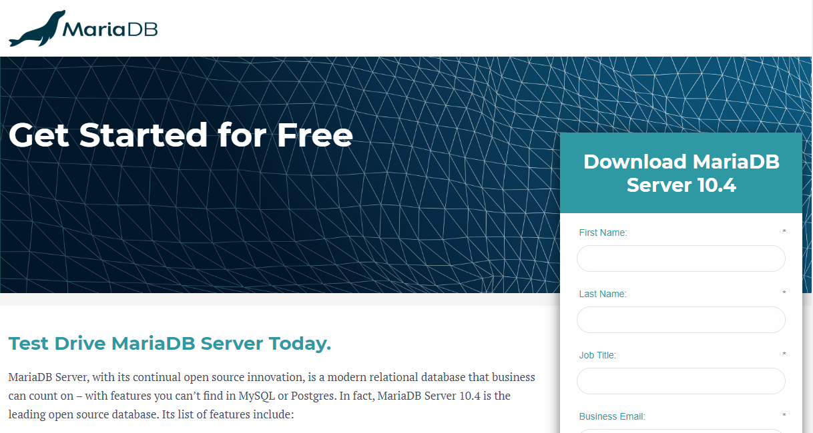
ウェブページに接続すると名前と職業などの基本情報を入力しますが、正確に入力する必要なしで、簡単に作成してダウンロードしたら良いです。
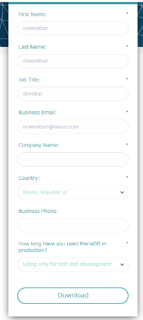
そうするとOSのバージョンを選択する画面が出ますが、我々はWindow環境でインストールするので、Window 64を選択してダウンロードしましょう。
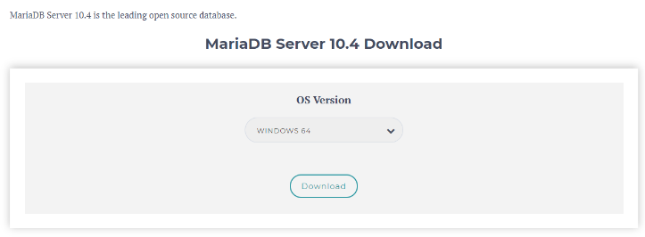
ダウンロードが完了すると下記とおりにインストールファイルができます。
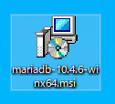
インストールファイルをダブルクリックして実行しましょう。
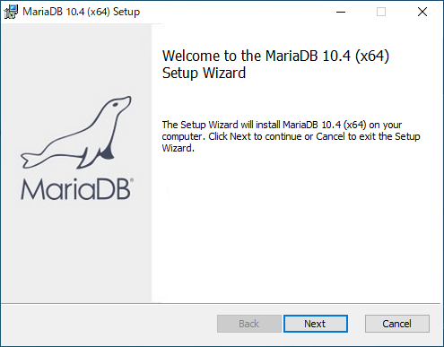
ライセンスを同意選択をしましょう。
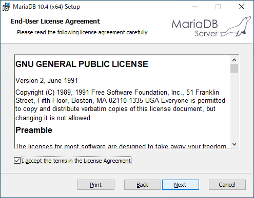
インストールするドライブを選択しましょう。
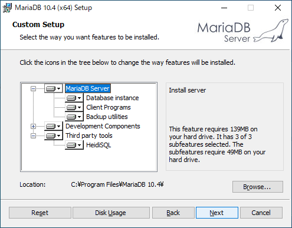
次はrootの基本初期パスワードを設定します。
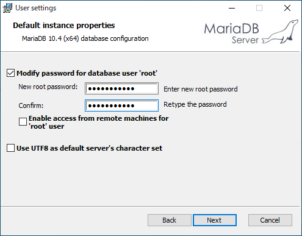
そしてservices.mscに表示するサービス名とポート設定ですが、特に設定することではなければDefaultで設定してNextボタンを押下します。
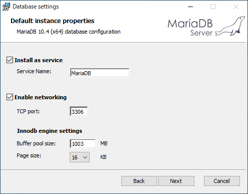
MariaDBはオープンソースなので、使用するところでフィードバックが必要ですね。私はチェックボックスを選択せずにNextボタンを押下しました。
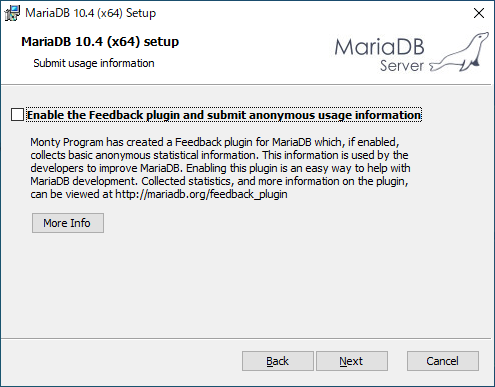
これからインストールが始まります。
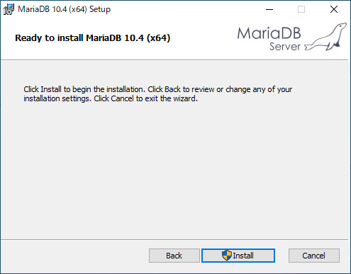
インストールが完了するとウィンドウメニューでMariaDBフォルダが作成されました。
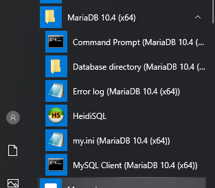
この中でMysql Clientをクリックして接続します。
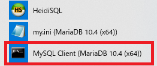
そしてMysqlデータベースに接続してuser情報を確認します。
-- 接続データベース変更
use mysql;
-- ユーザ情報検索
select host, user, password from user;
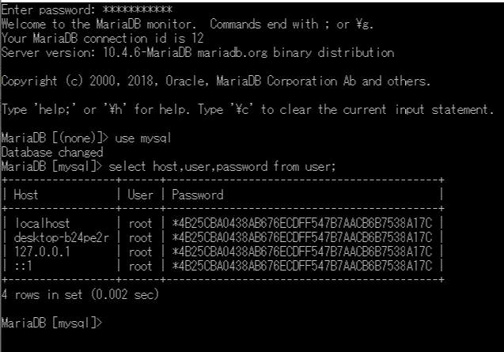
そしてユーザを一つ生成して権限を与えます。
-- nowonbunのidに接続地域と関係ないIDを生成した。
-- 外部で接続できないためには'%'代わりにlocalhostを入れましょう。
create user 'nowonbun'@'%' identified by 'a12345';
-- すべての権限を与える。
grant all privileges on *.* to 'nowonbun'@'%';
-- 更新
flush privileges;
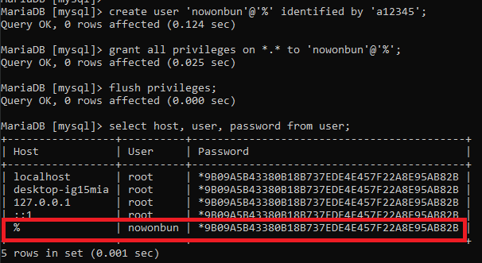
これからSql queryの探索機を利用して接続してみましょう。
私はDbeaverというクエリ探索機を使います。
link - [Tools] Dbeaver(無料Sql queryブラウザツール)
プログラムを実行して新しい接続コネクションを生成しましょう。
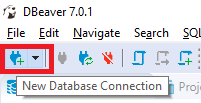
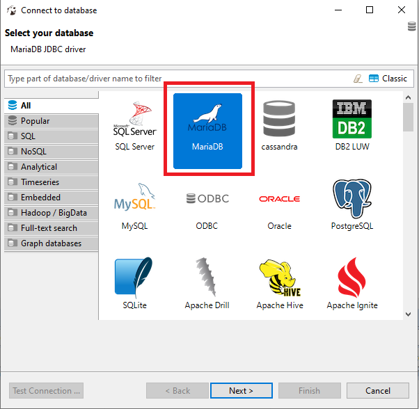
接続するデータベースを選択して接続情報を入力しましょう。
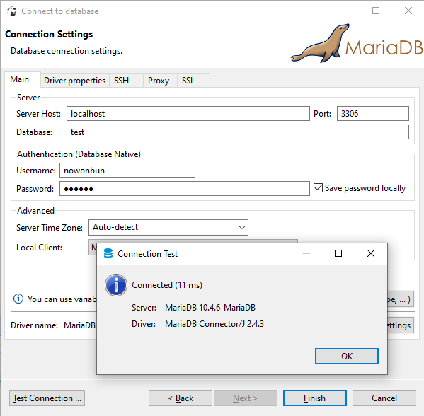
Test Connectionで確認すると接続が成功したことを確認できます。
接続して簡単なクエリを作成して、正常に動いているかを確認しましょう。
-- 接続データベース変更
use test;
-- テーブル生成
create table test (
idx bigint auto_increment, -- インデクス自動増加設定
contents varchar(200), -- データ
primary key(idx) -- 主キーを設定
)
-- データ入力
insert into test (contents) values('hello world');
-- 検索
select * from test;
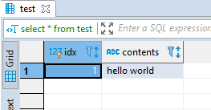
検索ができることを確認できました。
ここまでWindowにMariaDBをインストールする方法に関する説明でした。
ご不明なところや間違いところがあればコメントしてください。
- [Window] apache-tomcatでロードバランシング(Load balancing)する方法とセッションクラスタリング（セッション共有）2021/11/05 16:58:45
- [Window] Apacheでmod_jkとmod_proxyの差異、apacheでtomcatのwebsocketのプロキシフォーワードする方法2021/11/05 16:55:05
- [Window] MariaDBをインストールする方法2021/10/08 18:56:05
- [Window] WindowでFTPサーバを構築する方法2020/03/19 03:27:22
- [Window] Apacheをインストール方法、サービスに登録する方法。2019/10/18 07:36:51
- [Window] WindowでExplorerのContext menuを修正する方法。2019/07/01 01:42:41
- [Design pattern] 3-3. コマンドパターン(Command pattern)2021/11/05 17:01:42
- [Window] apache-tomcatでロードバランシング(Load balancing)する方法とセッションクラスタリング（セッション共有）2021/11/05 16:58:45
- [Window] Apacheでmod_jkとmod_proxyの差異、apacheでtomcatのwebsocketのプロキシフォーワードする方法2021/11/05 16:55:05
- [PHP] Apache環境の同じホスト中でPHPとJava(Servlet)を同時に起動、運用する方法2021/11/05 16:52:04
- [C#] 61. ウィンドウフォーム(Window form)でスレッド(Thread)を使い方、クロススレッド問題解決2021/11/04 19:29:51
- [Design pattern] 3-2. 責任の連鎖パターン(Chain of responsibility pattern)2021/11/04 19:27:58
- [Design pattern] 3-1. ストラテジーパターン(Strategy pattern)2021/11/03 18:38:52
- [C#] 60. ウィンドウフォーム(Window form)のイベント設定する方法2021/11/02 21:18:08
- [Design pattern] 2-7. ファサードパターン(Facade pattern)2021/11/02 19:32:31
- [Design pattern] 2-6. プロキシパターン(Proxy pattern)2021/11/01 19:42:44
- [Design pattern] 2-5. フライウェイトパターン(Flyweight pattern)2021/10/29 19:48:27
- [C#] 59. ウィンドウフォーム(Window form)にコントロール(Control)を使い方法2021/10/29 19:45:43
- [Design pattern] 2-4. デコレーターパターン(Decorator pattern)2021/10/28 20:11:13
- [C#] 58. ウィンドウフォーム(Window form)を作成する方法、そしてウィンドウメッセージとキュー2021/10/27 20:35:44
- [Design pattern] 2-3. ブリッジパターン(Bridge pattern)2021/10/27 20:32:21